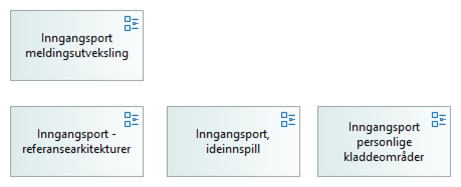

Inngangsport
(
)

Gjennom denne inngangsporten kan du drille ned i Archimate-modellene i arkitekturbibioteket. Navigeringsstrukturen er manuelt lagt opp, og kan gå på tvers av mappestrukturen.
difi:language
no
difi:name_no
Inngangsport
difi:name_en
difi:description_no
difi:description_en
difi:docViewPath
nab_modellsamling
difi:antoraViewPath
difi:antoraViewImagePath
Altinn 2.0 formidling - assessment
Altinn formidling 2.0 - applikasjonstjenester og API-er
Altinn formidling 2.0 - applikasjonstjenester - service usage
Altinn formidling 2.0 - forretningstjenester (Eriks forsøk)
Altinn formidling 2.0 - forretningstjenester og prosesser (Steinars modell)
Altinn formidling 2.0 - informasjonsmodell
Altinn formidling 2.0 - kapabiliteter
Altinn Formidling 2.0 - Roller
Altinn formidling 2.0 - sekvensdiagram
Altinn formidling - applikasjonstjenester - flow
Atlinn 2.0 formidling - applikasjoner og teknologier
Føringer - lovverk og standarder